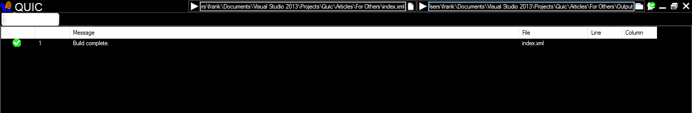

Introduction
Quic is a web development framework that enables you create rich web applications with less code than is usually needed.
Quic is basically a preprocessor; it goes through your HTML file, looking for custom tags, and producing standard HTML, CSS,
JavaScript (and pretty much anything) from such tags.
When a custom tag is encountered Quic loads the appropriate assembly and locates a class with the same name as the tag.
The class is then instantiated, and its Render method is called to emit the relevant codes and/or files.
So we can say Quic allows you to delegate the dirty jobs to a class, and include that class in your HTML file as a custom tag.
Background
In the first part of this article
(
Introducing the Quic Web Development Framework - Part 1) we were introduced to the Quic framework, its uses, the
ideas behind it, and its advantages.
We ended the article with a healthy discussion of the Quic-specific attributes expected in a <html> tag.
In the second part of this article
(
Introducing the Quic Web Development Framework - Part 2) we looked at the Quic-compliant <head>
tag, resource elements, the Quic-compliant <body> tag, UI elements, and value providers.
We ended the article with a suggestion that every Quic DLL file be accompanied with a manifest file describing the elements
(as well as value providers, file initializers) contained within that DLL file.
In this article, we'll look at how to create your own Quic elements, and various miscellaneous topics.
To successfully follow the source codes in this framework, all you need is a healthy knowledge of C#. Two of the core namespaces
used are System.Xml.Linq (I previously used System.Xml, but found it difficult retrieving line
number and column number information) and
System.Reflection to help
me load the relevant assemblies and classes.
Normally comments in the source file are ignored, and will not appear in the output file. To make a comment appear in the output
file, start it with <!--out:. That is, add the text "out:" (with the colom) after the tokens that normally
introduce a comment. Now the comment will be rendered to the output, but without the "out:" characters.
This comment in the source file:
will be rendered as this in the output file:
Every Quic element comes with a Loop property which can be set in markup. This property tells the element how
many times it should render itself to the output file. The default value for Loop is one, which means the element
should render itself only once.
<Button Loop="3">First set of buttons</Button>
<Button Loop="3" Text="Second set of buttons" />
This feature comes in handy when you need to repeat the same tag multiple times. For instance, you could use this to give a table
identical rows or to give a list identical list items.
To print out the number of times an element has rendered itself, query the LoopCount property.
Currently this property does not work well in containers (it always returns 1). Also, you have to use it in a lazy
evaluation (or it would return 0). These are limitations that would be addressed in a future release.
<Button Loop="3">{?String {$LoopCount}}</Button>
<Button Loop="3" Text="{?String {$LoopCount}}" />
Model or data binding is not supported natively in Quic yet. Since Quic allows you to work effortlessly with various other
frameworks like Angular and React, you can leverage the model/data binding they provide.
Quic is XML-Compliant
Always remember that your Quic file should be an XML-compliant file, and is therefore subject to the same rules that govern XML.
For instance, never forget to use & to output &.
<![CDATA[...]]>
You can use <![CDATA[my escaped text]]> to escape text. Quic will print out the escaped text verbatim
in the output file. This can be useful when you wish to render scripts that have characters that break the XML validation
rules. Just insert the entire script within a <![CDATA[...]]> block.
If CDATA is not sufficient (most probably because you need to include "]]>" in the escaped text),
use the special comment <!--cdata: ... -->.
This comment in the source file:
will be rendered as this in the output file:
<script>if (a > b) alert("greater than");</script>
Workflow Overview
The workflow of the entire system has been partially explained in the first part of this series.
The first significant thing that needs to be done is to create an instance of Quic.QuicDocument
[Quic\Core\QuicDocument.cs]. As the name implies, this object represents the document/file we have to
interact with. The class Quic.QuicDocument has no public constructors; you obtain an instance of the class by
calling the static method Load, and passing the file path to the XML source file as argument.
QuicDocument doc = QuicDocument.Load(@"c:\path\to\file.xml");
This method parses the source XML file (with the help of an instance of
System.Xml.Linq.XDocument), and builds a
tree of Quic elements with the help of the
QuicDocument.BuildElement method.
The
QuicDocument.Load method passes each relevant
System.Xml.Linq.XNode
object (most of which represent XML tags) to the
QuicDocument.BuildElement method.
The
QuicDocument.BuildElement method then passes relevant information gotten from the
System.Xml.Linq.XNode
object (like tag local name, tag namespace prefix) to the
QuicDocument.BuildObject method.
The
QuicDocument.BuildObject method uses the data it receives to load the appropriate assembly
(
System.Reflection.Assembly) and create the appropriate object (using
System.Activator). The created object
is then returned back to the
QuicDocument.BuildElement method.
The
QuicDocument.BuildElement method converts the returned object (
System.Object) into a Quic element
(
Quic.Element), and returns it to the
QuicDocument.Load method, which then stores the object for future
processing.
Having successfully created the instance of the Quic.QuicDocument, the next significant thing to do is to produce the
output file(s). Typically, more than one file is produced as output, so an output directory to contain all output files is
specified. The method that produces the output files is the Quic.Render method, and it accepts as argument the path
to the output directory.
doc.Render(@"c:\path\to\output\directory");
Essentially, what this method does is to call the
Element.BeginRender (not the
Element.Render) method
of each Quic element in the document. The
Element.Render method should not be called directly, instead the
Element.BeginRender method should be called as it does some preparatory works before calling the
Element.Render method. We will touch on this again shortly.
The Quic.QuicDocument class exposes three read-only properties that are important during any render session.
- OutputDirectory: Gets the output directory for the current render session.
- OutputFile: Gets the main output file for the current render session.
- OutputOptions: This is not yet used, but should hold options/settings that affect the current render session.
That's about it about the
Quic.QuicDocument class, and the general workflow of the system.
Quic.Element
To create a Quic element, you must inherit (directly or indirectly) from the abstract class Quic.Element
[Quic\Core\Elements\Element.cs].
Public properties you define in your element class can be accessed from markup (usually as the attribute of a corresponding tag), and
public read-write properties can even be set from markup. To prevent a public property from being visible to markup, apply the
[NotQuicProperty] attribute (located at Quic\Attributes\NotQuicPropertyAttribute.cs) to the
property.
Quic.Element defines a very important virtual method:
public virtual IValueProvider GetImplicitValueProvider(string propertyName, Type propertyType)
This method supplies value providers that help convert string attribute values gotten from markup to actual objects of
appropriate data types, which are then assigned to the appropriate properties of the Quic element.
The implicit value providers registered for Quic.Element are not often sufficient. This is why you have the
liberty to override the GetImplicitValueProvider method. This is exactly what we do in a number of
Quic.Bootstrap.dll elements. For instance, the very core class BootstrapElement
[Quic.Bootstrap\Elements\BootstrapElement.cs] provides its own implementation of the
GetImplicitValueProvider method:
public override IValueProvider GetImplicitValueProvider(string propertyName, Type propertyType)
{
if (propertyName == "Align")
{
return AlignmentProvider.Singleton();
}
else if (propertyName == "State")
{
return StateProvider.Singleton();
}
else if (propertyName == "Validation")
{
return ValidationStateProvider.Singleton();
}
return base.GetImplicitValueProvider(propertyName, propertyType);
}
Check out the source codes for the implicit value providers registered in various
Quic.Bootstrap.dll elements
in
Quic.Bootstrap\ValueProviders\.
Value providers were covered in greater detail in the second part of this series.
Quic.Element defines an abstract method:
public abstract void Render();
This is probably the most important method you need to implement in your base class, as this is the method called to emit
the output texts and/or files.
Quic.Element exposes some very important properties:
-
public virtual string Name { get {...} set {...} }
This is the name of the element, and should be unique throughout the containing document.
-
[NotQuicProperty]
public QuicDocument Document { get; set; }
This exposes the Quic.QuicDocument instance that holds this element. The element can then query for
Document.OutputDirectory, Document.OutputFile, and Document.OutputOptions, which were
described earlier on.
-
[NotQuicProperty]
public bool IsContainer { get; set; }
This determines whether the Quic element can have children or not.
-
[NotQuicProperty]
public ElementCollection Elements { get {...} }
Whenever a tag on the markup file is not empty and it's matching Quic element is a container, the content of such tag
is parsed into a collection of Quic elements, and those elements are stored in this property.
-
public string Content { get; set; }
Whenever a tag on the markup file is not empty but it's matching Quic element is not a container, the content of such tag
is stored in this property.
If a Quic element has children, it is the resposibility of the parent element to call the Render methods of its
children, usually during its own Render operation. Nevertheless, you should not call the Render
method directly; instead, call the BeginRender method. BeginRender does some preparatory tasks (like
evaluating lazy properties) and then calls Render the appropriate number of times, as defined by the
Loop property.
Although you can inherit from Quic.Element directly, you should inherit from either Quic.UIElement
or Quic.ResourceElement.
Extending Quic.UIElement
If an element is meant to contribute to the user interface of the document, let the element extend Quic.UIElement
[Quic\Core\Elements\UIElement.cs]. This is a very small and simple class that adds a few properties
that are expected in a UI element.
Extending Quic.ResourceElement
If an element is not meant to contribute to the user interface of the document (perhaps it simply provides a service
used by other elements), let the element extend Quic.ResourceElement
[Quic\Core\Elements\ResourceElement.cs]. This class provides one very important property:
public virtual string Key { get {...} set {...} }
The use of this property was covered in the second part of this series.
Messaging
You can send messages from your Quic elements to the Quic environment (the CLI or the GUI Quic Bar). Currently there are
two ways to send such messages:
- As a prompt
- As a notification
To send messages, you use the
Quic.Messaging.Messenger class
[
Quic\Messaging\Messenger.cs].
Messenger.Prompt
When a prompt is sent from your Quic element to the environment, the Quic Bar graphical user interface (GUI) handles it by raising a
dialog/message box while the command line interface (CLI) writes the message of the prompt to the console window.
To send prompts, you call the Messenger.Prompt method:
public static void Prompt(string message, MessageType messageType)
The first argument you pass is the message itself.
The second argument represents the type of message you are sending. This may affect how the environment treats the message.
Quic.Messaging.MessageType [
Quic\Messaging\MessageType.cs]
is an enum defined as shown below:
public enum MessageType
{
Error,
Info,
Question,
Success,
Warning
}
Messenger.Notify
When a notification is sent from your Quic element to the environment, the command line interface (CLI) writes the message of
the notification to the console window while the Quic Bar graphical user interface (GUI) handles it by
changing the notification icon to the right of the bar and adding the message to the notification tray.

To send notifications, you call the Messenger.Notify method:
public static void Notify(INotification notification)
The argument you pass should implement the interface
Quic.Messaging.INotification
[
Quic\Messaging\INotification.cs] which is defined as shown below:
public interface INotification
{
string Message { get; }
MessageType MessageType { get; }
string FilePath { get; }
int Line { get; }
int Column { get; }
bool HasLineInfo { get; }
}
You should never throw exceptions from your Quic elements to the environment; they will not be caught. Instead, you should create
an instance of Quic.QuicException [Quic\Exceptions\QuicException.cs] and pass it as the
argument of a Messenger.Notify call. This is possible because Quic.QuicException implements the
Quic.Messaging.INotification interface.
Trying to Keep it Short
There are a few more topics to touch but the article is getting too long. The major remaining topics are:
- Creating Your Own Value Providers
- Creating Your Own File Initializers
- Creating Your Own Output Files
These concepts were touched in the second part of this series, and can be easily understood by looking at the project source code.
License